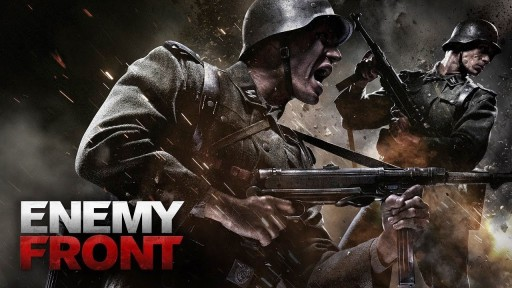

Enymy Front

PLATFORMY
PC
X360
PS3
------

Wiecej Zdj.
Osadzona w realiach II wojny światowej pierwszoosobowa strzelanina (FPS), wyprodukowana przez studia deweloperskie firmy CI Games w Rzeszowie i Londynie.
Enemy Front to kolejna strzelanina FPP rozgrywająca się w czasach II wojny światowej, przy czym tym razem skupiono się głównie na ukazaniu Powstania Warszawskiego, w czasie którego rozgrywa się znaczna część produkcji. Tytuł został stworzony przez rzeszowski i londyński oddział firmy City Interactive, która wsławiła się przede wszystkim za sprawą serii Sniper: Ghost Warrior. Przez kilkanaście miesięcy (od listopada 2010 do października 2012 roku) w pracach nad grą pomagał słynny deweloper Stuart Black, odpowiedzialny m.in. za efektowną strzelaninę o nazwie Black, jednak w wyniku odmiennych wizji produkcji zrezygnowano z jego usług.
Gracz wciela się w Roberta Hawkinsa – amerykańskiego korespondenta wojennego, który przybył do pogrążonej w wojnie Europy, by relacjonować wszystkie wydarzenia. Priorytety Hawkinsa szybko jednak uległy zmianie, kiedy na własne oczy ujrzał on okrucieństwo hitlerowców, w związku z czym postanowił dołączyć do ruchu oporu. Akcja Enemy Front rozgrywa się w czasie Powstania Warszawskiego, ale twórcy wykorzystali wspomnienia głównego bohatera, do ukazania walki także w innych krajach, w tym w Norwegii, Francji czy Niemczech.
Rozgrywka nie wyróżnia się niczym szczególnym od reszty FPS-ów, nawiązując do klasyków gatunku, jak Medal of Honor i Call of Duty. Tytuł stawia przed graczem szereg zadań - od obrony kościoła przy użyciu CKM-u, przez ostrzeliwanie wrogów z karabinu snajperskiego, aż po misje mające nieco bardziej otwarty charakter. Podczas takich etapów gracz samemu może decydować w jaki sposób wypełni zadanie. Możliwe jest więc zaatakowanie przeciwników bezpośrednio, jednak równie dobrze można eliminować poszczególnych żołnierzy po cichu, albo wykorzystując różne formy sabotażu (np. bomby z czasowym zapalnikiem, wybuchające beczki, itd.).
WYMAGANIA
Minimalne:
Brak Informacji.
Rekomendowane:
Core i5 2 GHz, 3 GB RAM, karta grafiki 512 MB (GeForce 8800 GT lub lepsza), 10 GB HDD, Windows XP(SP3)/Vista/7/8
Core i5 2 GHz, 3 GB RAM, karta grafiki 512 MB (GeForce 8800 GT lub lepsza), 10 GB HDD, Windows XP(SP3)/Vista/7/8
Minimalne:
Brak Informacji.
PEGI


Język Gry
PL napisy, EN napisy i dialogi